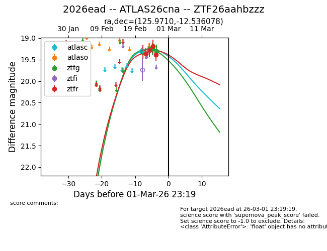
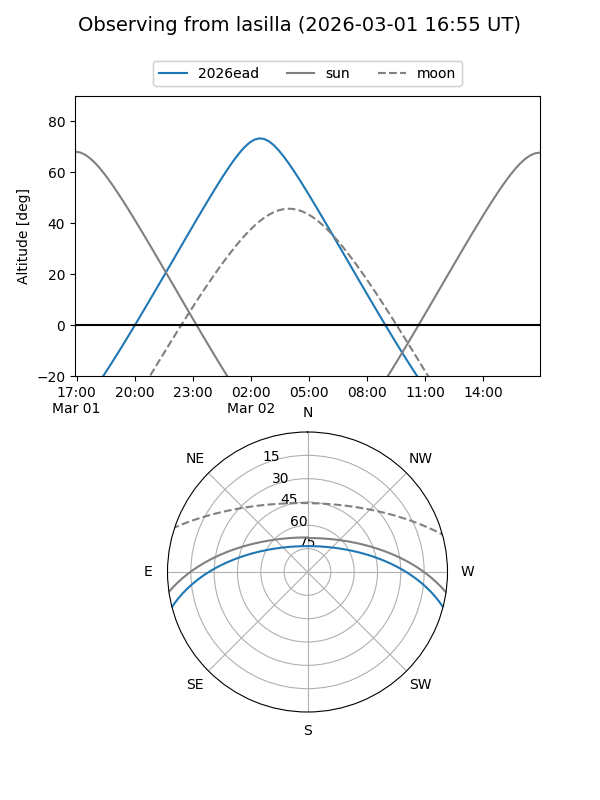
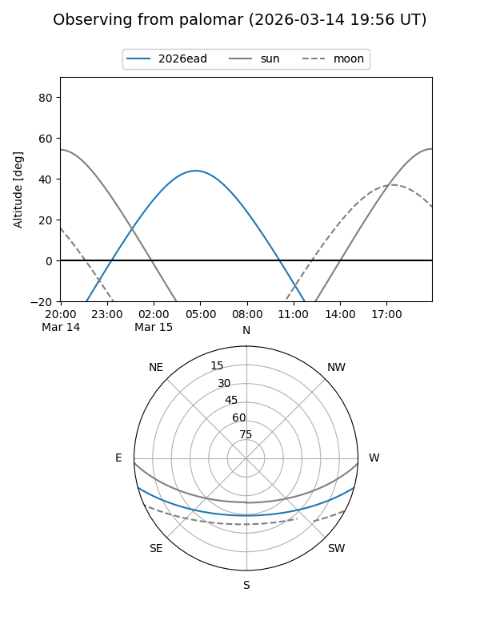
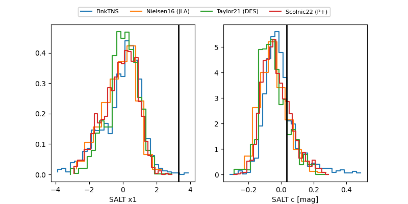

2026ead
Target 2026ead at 2026-03-01 23:20
Aliases and brokers:
FINK: link
Lasair: link
ALeRCE: link
TNS: link
YSE: link
alt names
ZTF26aahbzzz (ztf,fink_ztf)
2026ead (tns,yse)
ATLAS26cna (atlas)
Coordinates:
equatorial (ra, dec) = 125.9710,-12.53608
equatorial (HMS+DMS) = 08:23:53.05,-12:32:09.88
galactic (l, b) = (235.2140,+14.00691)
Flags:
Photometry:
last atlasc=19.30, ztfg=19.30, ztfr=19.39
1 atlasc, 3 ztfg, 4 ztfr detections
Lightcurve

Visibility


Additional plots
